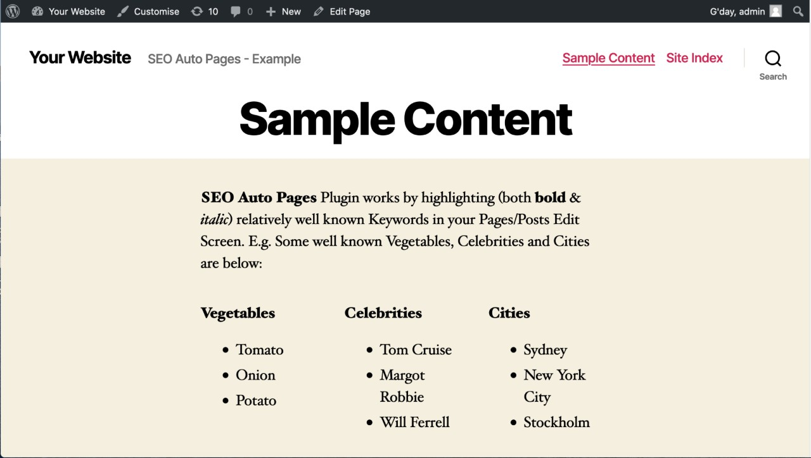
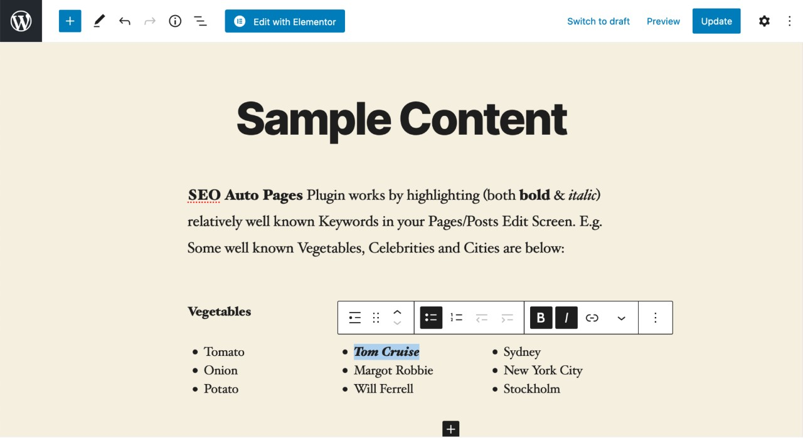
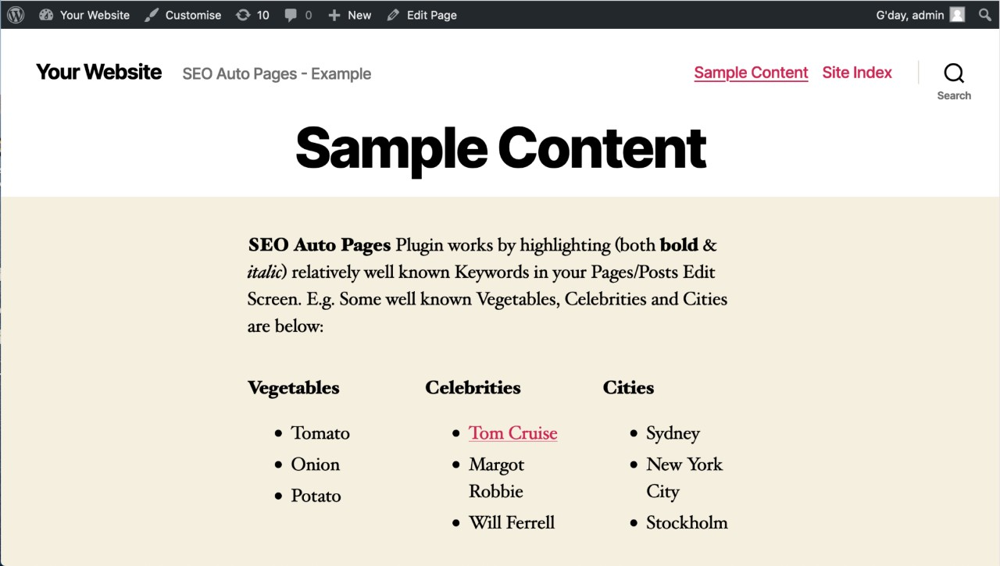
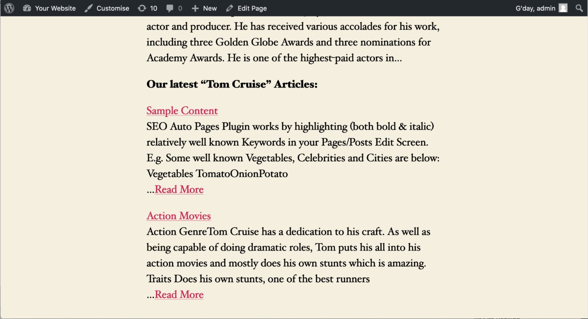
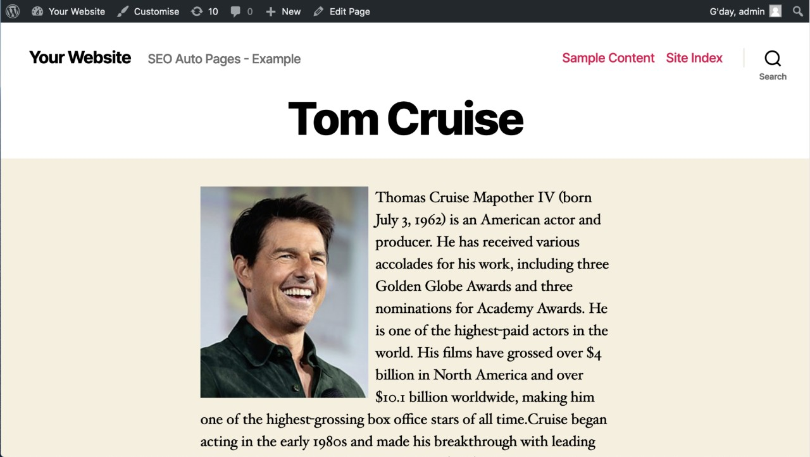
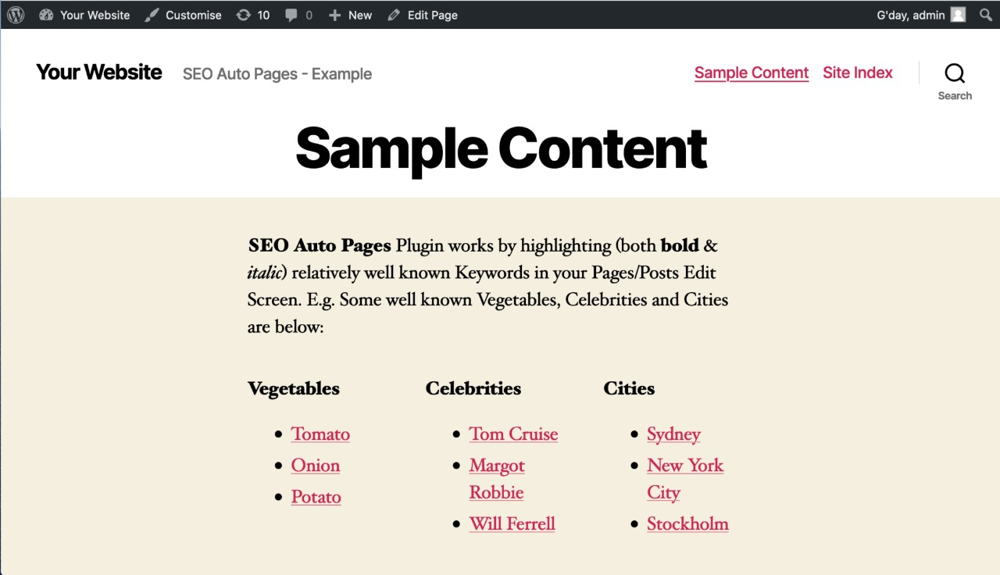
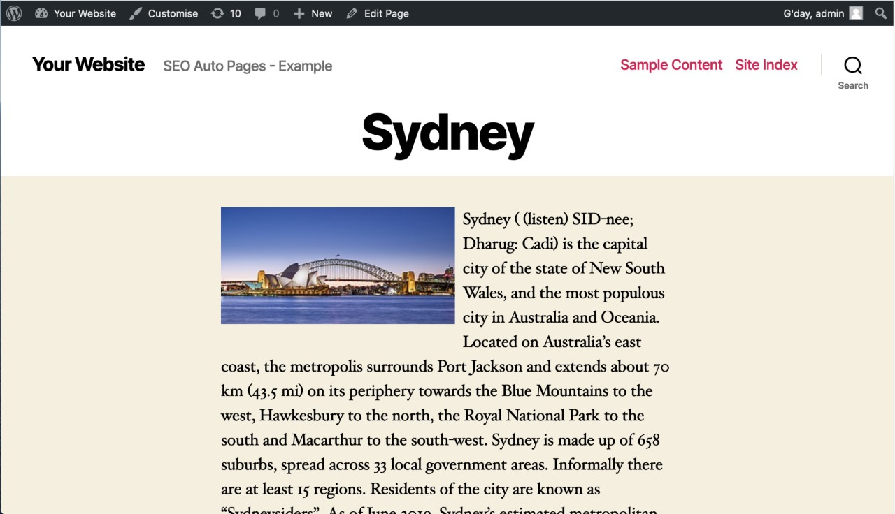
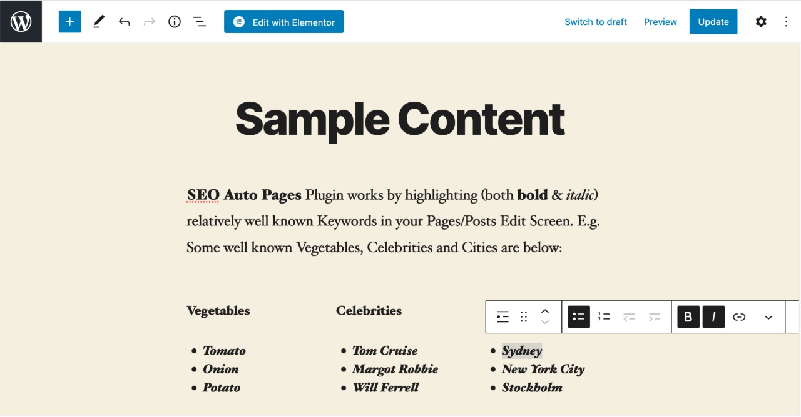
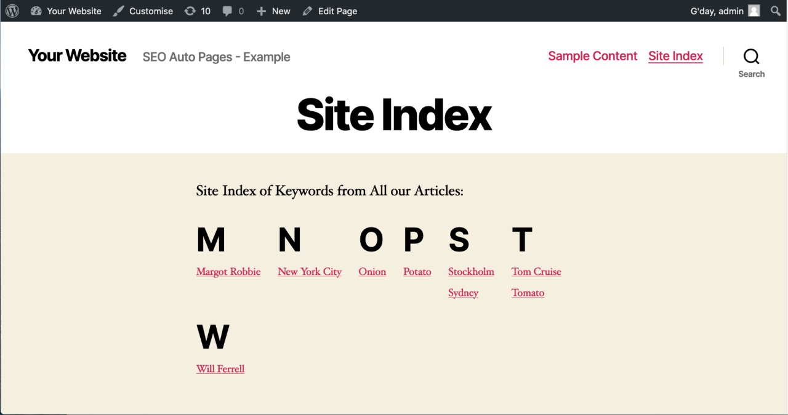

SEO Auto Pages Plugin works by simply highlighting (both bold & italic) relatively
Well Known Keywords in your Pages/Posts Edit Screen. They must be relatively well
known common words. E.g. I Edited this page and Highlighted (both bold & italic) some Well
Known Keywords in the categories of Vegetables, Celebrities and Cities. I Saved my page and they
then became links when I viewed the page. Each link now goes to an Auto Page with a
Definition from an External Source (API). You don’t have to write a thing! These Auto
Pages are a quick way to Increase your Page Count and Session Duration. Check
out the Auto Pages below:
Click on this / site-index page that lists all your Special Auto Pages. Link to this
/site-index page in your Top Navigation Menu for best results.
Screen Shots that Explain Process (Sequential, Click to Enlarge)









Further Instructions and FAQ are below.
Instructions
Back to Top
- Go to your Plugins Page and Click on [Add New] then [Upload Plugin]. Browse and Select the
“SEO Auto Pages” Plugin ZIP, Upload and Activate.
- Check that your Settings > Permalink Settings have been setup properly. Common
Settings should be set to “Post name” or anything Other Than “Default”. This is
because the “SEO Auto Pages” Plugin uses Clean URL’s.
- Log In to WordPress as Admin and Find an Existing Page/Post on your Site that has some
interesting written Content with Well Known Keywords (Words/Phrases that probably
have a Definition on the Internet) like “Tom Cruise”, “Car”, “Tomato” etc. Then in
the Visual Editor “both Bold then Italic” this Keyword so it looks like Tom Cruise.
Then [ Update ] your Page/Post. Both Bold & Italic is used because we didn’t
want to interfere with your existing Bolded Words.
- View the Page/Post and the Keywords you have Highlighted have now been Turned into
Links (i.e. /keyword/tom-cruise/) and you will be taken to an Auto Page with the
Definition of “Tom Cruise”. There is also a list of Articles listed below where the Keyword
appears in.
- Sometimes the Auto Page shows a Correct Definition with both Text and Image.
Sometimes Just Text and No Image. Sometimes No Definition. Sometimes Wrong
Definition. It is up to you to TEST Each Auto Page that you Create. The
Definition comes from an Online API. If you find No Definition the Article List of
where this Keyword Appears will be displayed regardless. You may want to keep these Empty
Auto Pages, it’s up to you.
- But If you are Not Satisfied with the Auto Definition Page then simply go to the
Post/Page and Unhighlight (un-bold and un-italic) that Keyword then click
[Update] Page/Post. Then that Keyword will remain Normal Text like it used to be.
Play around and see which of your Keywords Generate the Best Definitions 🙂
- A Site Index Page “/site-index" auto updated that lists all your Special Keywords. We
strongly recommend you create a LINK to “/site-index” page in your Main
Navigation Menu. This way the Google Crawler has a better chance to Crawl
“/site-index” and index all the Auto Page URL’s.
- If you want to take advantage of the Traffic that the Auto Pages will give you, place a
LINK to your Contact Us (or Sales) Page or an actual Small Contact Form
on the Right Hand Column of your Theme.
OPTIONAL (Submit Sitemap)
-
First Make sure that the WP Plugin Google XML Sitemaps won’t interfere with any of
your other Sitemap Plugins. If everything’s ok Download “Google XML Sitemaps” Plugin:
https://wordpress.org/plugins/google-sitemap-generator/
Go to your Plugins Page, upload the plugin zip and Activate.
- Go to:
/wp-admin/options-general.php?page=google-sitemap-generator%2Fsitemap.php
Scroll down to “Additional Pages”
Then set the following fields…
URL to the page: http://[your-site]/site-index
Priority: 1
Change Frequency: Always
Last Changed: 2021-01-01 (or Todays date backwards in this format)
-
Submit the special Sitemap below to your Google Search Console Sitemap Section:
http://[your-site]/sitemap-externals.xml
Now there is a better chance the Auto Pages URL’s will be indexed by Google.
FAQ
Back to Top
-
My Auto Page doesn’t pull in Any Definition Content
That means the Auto Definition Page didn’t return any definition content. You can still keep
the page as a list if where this keyword appears. But if you want to remove it edit your
Page/Post and unhighlight (remove bold/italic) that keyword.
-
My Auto Page doesn’t pull in Any Definition Content
Sometimes when you go to an Auto Page, there is wrong definition content. For example if you
highlight the keyword bike the definition page content may not be what you want. In this
case edit your Page/Post and unhighlight (remove bold/italic) that keyword.
-
How do I Highlight a Keyword to Create the Auto Page?
You must both Bold and Italic the Keyword. In HTML it would look like Bold
and Italic. Say you highlight Car, it would then appear as Car. Then click [UPDATE]
Post/page. Then when you view the Post/Page that Keyword will become a link.
-
I want to change the path /site-index to something else.
The Site Idex Page Path has to remain as /site-index
-
What if my Definition Content Stalls or Doesn’t Load?
It could be the case that your Not connected to the Internet.
-
Do I have to use the “Google Sitemap Generator” Plugin?
The “SEO Auto Pages” Plugin works together with the “Google Sitemap Generator” so YES you
have to use it. If you do not Submit the
https://[www.yoursite.com]/sitemap-externals.xml
Sitemap into your Google Console then Google May Not Index your Auto Pages.
-
How do I uninstall the “SEO Auto Pages” Plugin
Go to your Plugins Page http://[your-site]/wp-admin/plugins.php
Find “SEO Auto Pages” and click [deactivate]
-
I can’t find my “SEO Auto Pages” Auto Pages URLs in Google Search
For you to find your Auto Pages URLs in Google you need to have followed The instructions
(point 11.) and Submitted the Site Map
https://[your-site]/sitemap-externals.xml
Into your Google Console Account. It may take days or even weeks for Google to Spider this
Sitemap. Once Google has spidered the Sitemap your Auto Pages URLs will be found in Google
Searches.
-
Can I style the Auto Pages and Site Index Page?
Sure, you can overwrite the CSS styles on these pages in your Theme’s style.css file. Just
note that you should use the phrase ” !important ” next to the styles to make sure you
override them.
-
What Versions of WordPress does this Plugin Support?
The “SEO Auto Pages” Plugin has been tested on WordPress 4.0 to v5.7